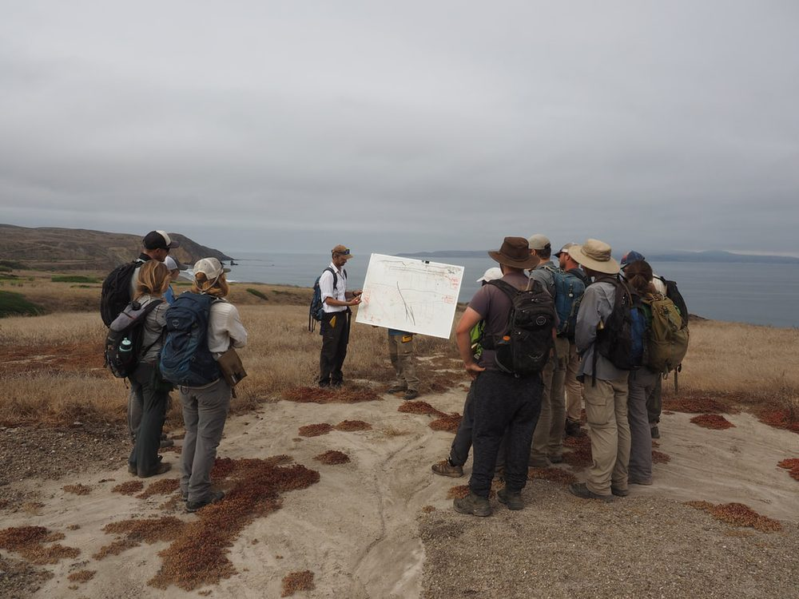
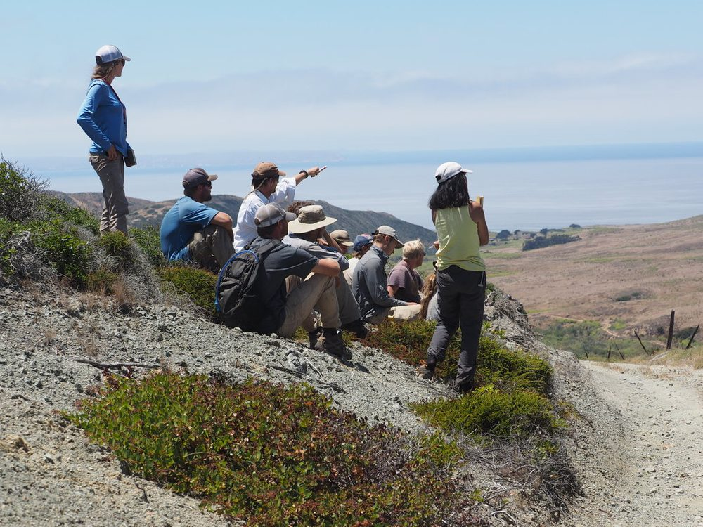

Teaching
Undergraduate and graduate courses in Earth Science at UC Santa Barbara.
Undergraduate and Graduate Teaching

EARTH 10 Antarctica
The interrelations of the physical and biological environments on the continent Antarctica; Antarctica as an earth system. Included are studies of tectonic history, global warming, ozone depletion, mineral resources, and the history of scientific exploration of the continent.
EARTH 157 / 257 Plate Tectonics
Prerequisite: Earth 2; upper-division standing. one year of university-level mathematics and physics. Introduction to sea floor spreading, plate tectonics, and continental drift. Geometry and evolution of present day plates. Measurement and calculation of plate motions. Geophysical and geological implications of resulting relative motions at plate boundaries.
EARTH 124 / 224 Geochronology
Prerequisite: Chem 1A; and, Earth 2, or 3, or 4, or 4S; Earth 114. Principles of radiogenic isotope geochronology, and applications of the major geochronological methods to terrestrial and extraterrestrial problems ranging from global climate change to petrology to tectonics to solar system evolution. This is a five week course.
EARTH 124T / 224 Introductory Thermodynamics
Prerequisite: Chem 1C; Math 3B; Earth 2. Introduction to thermodynamics and kinetics of rock-water systems. Calculation of mineral equilibria as a function of pressure temperature and fluid compositions. Applied problems at surface and subsurface conditions.
EARTH 115 Analytical Methods in Geomaterials
Prerequisite: Earth 114. Optical properties of inorganic crystals; techniques of mineral identification using the polarizing microscope; strategies for studying rocks in thin section. Fundamental theory and application of electron- and ion-beam instruments in quantitative characterization of geomaterials.
EARTH 177 / 277 Ore Deposits and Mineral Resources
Prerequisite: Earth 2; Earth 114. Distribution and characteristics of major classes of mineral deposits - their geologic framework, mineralogy, and structure. Lectures explore petrogenetic models for ore-formation. Laboratory exercises and field trips stress recognition of ore and accessory minerals, zoning, and exploration strategies.
EARTH 118 / 119 Summer Field Geology
Prerequisite: Earth 103, 104A & 104B; one course from Earth 102A/L-B/L-C/L. All prerequisites require a grade of C- or better. Intensive hands-on training in the collection, interpretation, and presentation of geologic field data. Preparation of geologic maps, sections, and a professional report as tools to understanding geologic processes. Area and focus of investigation changes each year.
EARTH 270 Mass Spectrometry for Earth Scientists
Mass spectrometry plays an integral role in modern earth science research with broad application in fields including geochemistry, oceanography, hydrology, petrology and tectonics. The overarching goal of this course is to enable students to develop a solid understanding of both the practical and theoretical aspects of mass spectrometry whilst building analytical skills appropriate to their research interests. This course is intended to be largely practical in nature, providing exposure to a number of plasma-, gas- and thermal-source instruments in the department. Practical exercises will be supplemented by lectures, discussions and literature reviews, presenting background on the theory and application of mass spectrometry techniques.
